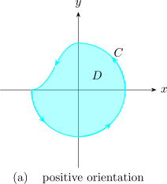
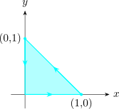

4.8 Transformation Of Line Integrals Into Double Integrals
Green’s theorem in the plane.
Green’s theorem gives the relationship between a line integral around a simple closed curve \(C\) and a double integral over the plane region \(D\) bounded by \(C\).
We assume that \(D\) consists of all points on \(C\). The positive orientation of a simple closed curve refers to a single counter clockwise traversal of \(C\). Thus, if \(C\) is given by \(\overline {r}(t)\hspace {0.2cm}, \hspace {0.3cm} a\leq t \leq b\) then the region \(D\) is always on the left as the point \(\overline {r}(t)\) traverses \(C\).
|  |
Let \(C\) be a positively oriented piece-wise smooth, simple closed curve in the plane and let \(D\) be the region bounded by \(C\). If \(P\) and \(Q\) have continuous partial derivatives on an open region that contains \(D\), then \[\int _C P\,dx + Q\,dy = \iint \limits _D\Bigg (\frac {\partial Q}{\partial x} - \frac {\partial P}{\partial y}\Bigg ) dA\]
Note. The notation \(\displaystyle {\oint _C P\,dx + Q\,dy}\) is sometimes used to indicate the line integral is calculated using the positive orientation of the closed curve \(C\).
Another notation for the positively oriented boundary curve of \(D\) is \(\partial D\) , so that \[\iint \limits _D \Bigg ( \frac {\partial Q}{\partial x} - \frac {\partial P}{\partial y}\Bigg ) dA = \int _{\partial D} P \,dx + Q \, dy\]
Evaluate \(\displaystyle {\int _C x^4dx + xydy}\), where \(C\) is the triangular curve consisting of the line segments from \((0,0)\) to \((1,0)\) , from \((1,0)\) to \((0,1)\) and from \((0,1)\) to \((0,0)\).

Solution. \[P = x^4\hspace {0.3cm} , \hspace {0.5cm} Q = xy\hspace {1cm} \implies \hspace {1cm} \frac {\partial P}{\partial y} =0 \hspace {0.5cm} , \hspace {0.5cm} \frac {\partial Q}{\partial y} = y\]
\[\implies \hspace {1cm} \frac {\partial Q}{\partial x} - \frac {\partial P}{\partial y} =y\]
\[D =\big \{(x,y): 0\leq x\leq 1 \hspace {0.3cm} , \hspace {0.3cm} 0\leq y \leq 1 -x\big \}\]
By Green’s Theorem \begin {align*} \int _C x^4\,dx + xy\,dy & = \iint \limits _D y\,dA\\\\ & = \int ^1_0 \int ^{1-x}_0 y\,dy\,dx\\\\ & = \frac {1}{6}\\ \end {align*}
Evaluate \(\displaystyle {\oint _C\Big (3y - e^{\displaystyle {\sin x}}\Big )\,dx + \Big (7x + \sqrt {y^4 + 1}\Big )\,dy}\) where \(C\) is the circle \(x^2 + y^2 = 9\).
Solution.
The region \(D\) bounded by \(C\) is the disk \(x^2 + y^2 =9\). Applying Green’s theorem \begin {align*} \oint _C \Big ( 3y - e^{\displaystyle {\sin x}}\Big )\, dx + \Big ( 7x + \sqrt {y^4 + 1}\Big ) \,dy & = \iint \limits _D (7-3)\,dA\\\\ & = \int ^{2\pi }_0 \int ^3_0 4\,dr\,d\theta \\\\ & = 36\pi \\ \end {align*}
One application of the reverse of Green’s theorem is in computing areas. Since the area of \(D\) is \(\displaystyle {\iint \limits _D 1 dA}\), we wish to chose \(P\) and \(Q\) so that \[\frac {\partial Q}{\partial x} - \frac {\partial P}{\partial y} = 1\]
\(P = 0,\hspace {0.2cm} Q = x\) or \(P = -y,\hspace {0.2cm} Q = 0\) or \(P = \dfrac {-1}{2}\,\,y,\hspace {0.2cm} Q = \dfrac {1}{2}\,\,x\). Then we get \[A = \oint _Cx \,dy = - \oint _Cy \,dx=\frac {1}{2} \oint _C(x d\,y-y\,dx)\]
If \(C\) is a simple closed curve that bounds a region to which Green’s theorem applies, then the area of \(D\) is \[ A(D) = \frac {1}{2}\int _{\partial D} x\,dy - y\,dx =\frac {1}{2}\oint _C x\,dy - y\,dx\]
Solution.
\(\displaystyle {\frac {x}{a} = \cos t\hspace {0.2cm}, \hspace {1cm} \frac {y}{b} = \sin t\hspace {0.2cm} , \hspace {1cm} 0\leq t \leq 2\pi }\)
\[\implies \hspace {1cm} x = a \cos t\hspace {0.2cm} , \hspace {1cm} y = b\sin t\]
\begin {align*} A(D) & = \iint \limits _D dA = \frac {1}{2} \int _C x\,dy - y\,dx\\\\ & = \frac {1}{2}\int ^{2\pi }_0 \big (a\cos t\big ) \big (b\cos t\big ) \,dt - \big (b\sin t \big ) \big (-a\sin t\big )\, dt\\\\ & = \frac {1}{2}\int ^{2\pi }_0(ab\cos ^2t + ab \sin ^2t)\, dt\\\\ & = \frac {ab}{2}\int ^{2\pi }_0 dt\\\\ & = ab\pi \\ \end {align*}
Questions on this section
Stuck on something here? Ask below and it stays attached to this topic.